COMMUNITY SERVICE
輔導學員教學與社區服務
協會陪伴學員將所學技能運用於教學與社區服務，從學習者逐步成為教學協助者，並將手作活動帶入社區、樂齡及公益服務場域。
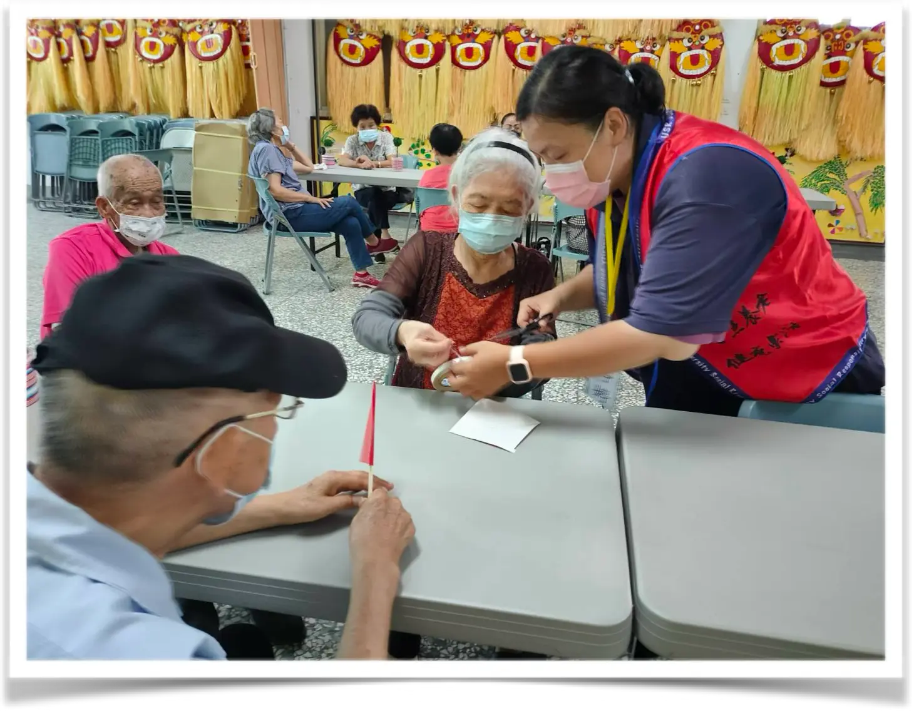
協會不只辦理課程，也持續陪伴學員走向教學、社區服務、市集實踐與公益參與，將手工藝轉化為連結人群與回饋社會的行動。
協會陪伴學員將所學技能運用於教學與社區服務，從學習者逐步成為教學協助者，並將手作活動帶入社區、樂齡及公益服務場域。

從作品整理、商品陳列到現場交流，協會協助學員累積實際展示與銷售經驗，提升自信與第二專長的應用能力。
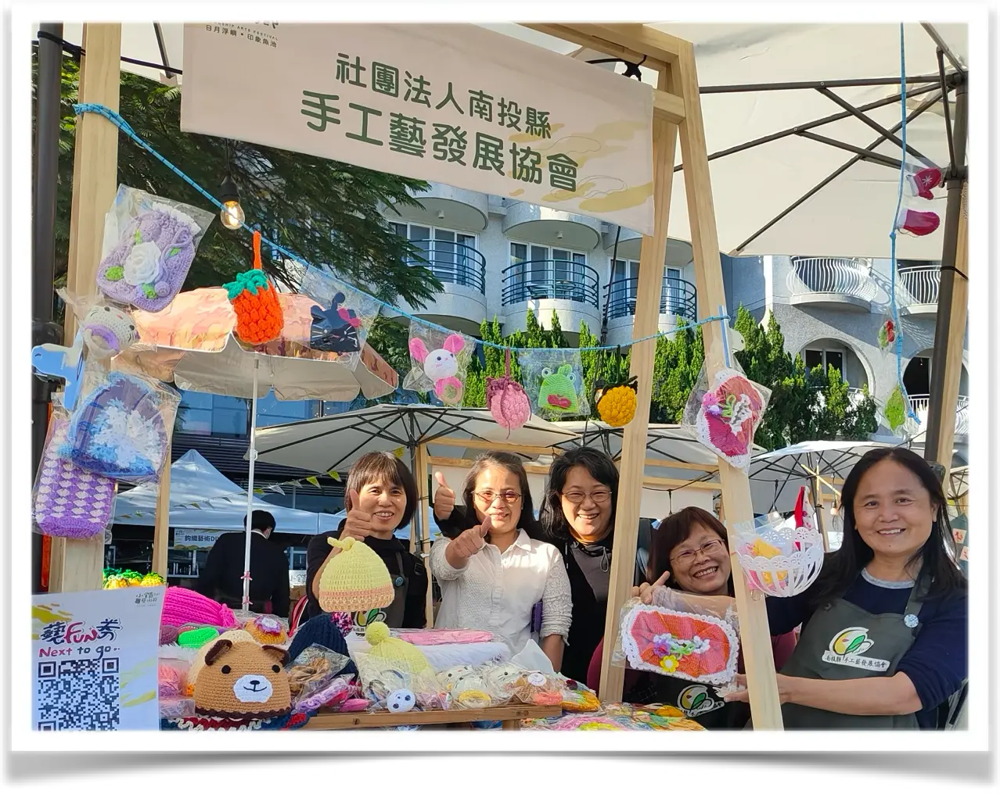
協會帶領會員與學員運用手工藝投入公益服務，製作並捐贈保暖用品、手作作品及公益義賣商品，讓工藝成為傳遞關懷的力量。
公益行動包含協助製作保暖套共90份，以及捐贈手作編織、輕手感鉤針織品等作品，獲合作公益單位致贈感謝狀。
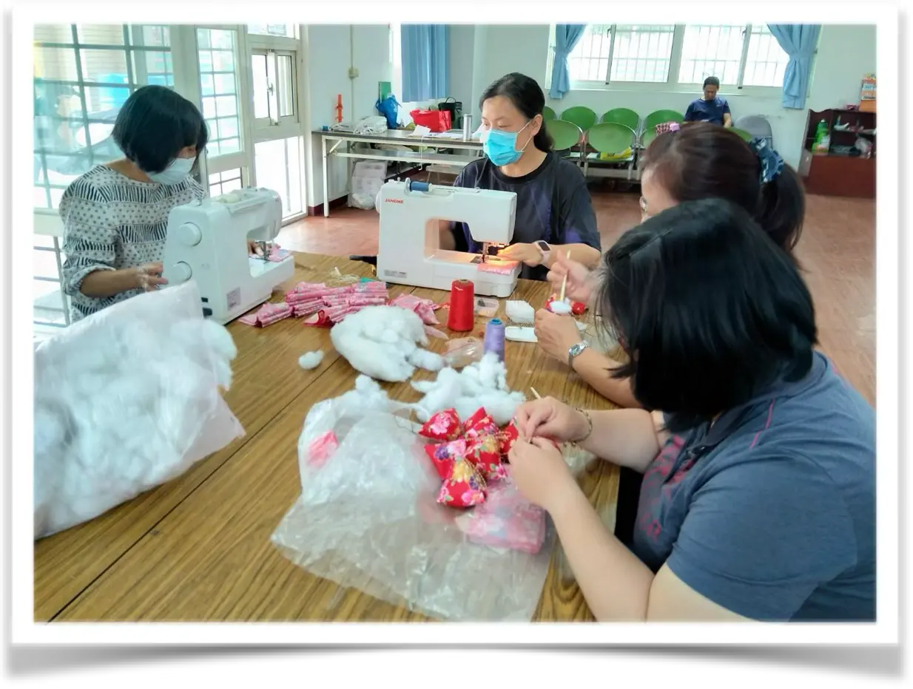
114年參與茶博覽會公益活動，協會帶領會員及學員製作手工作品，並將作品捐贈予智能障礙公益團體進行公益販售，透過工藝創作支持公益服務，實踐「用手藝做公益」的理念。
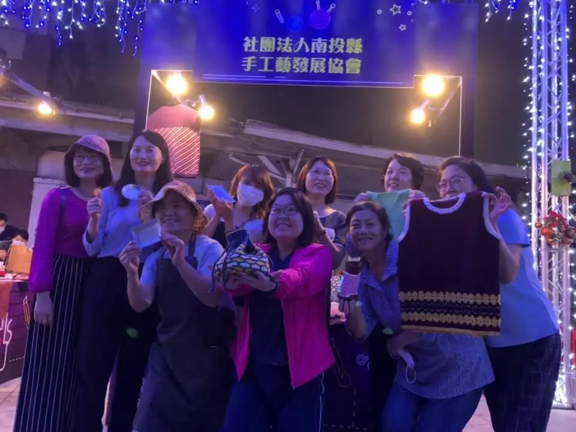
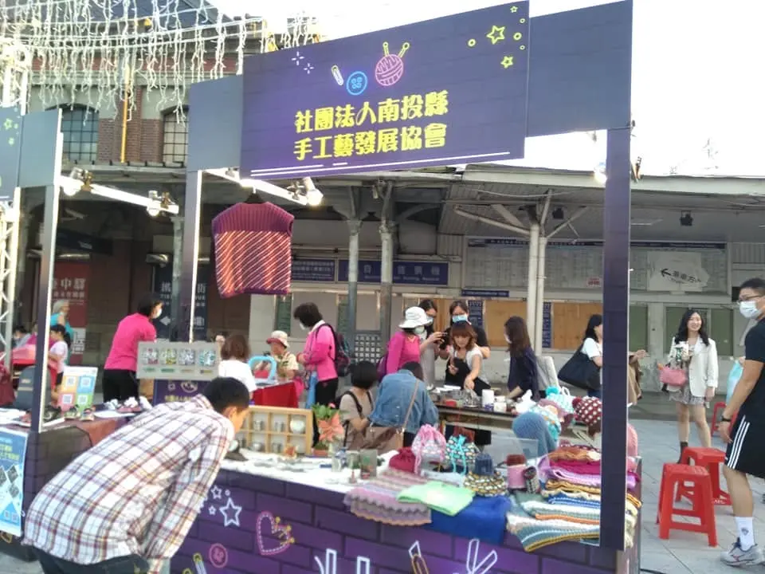
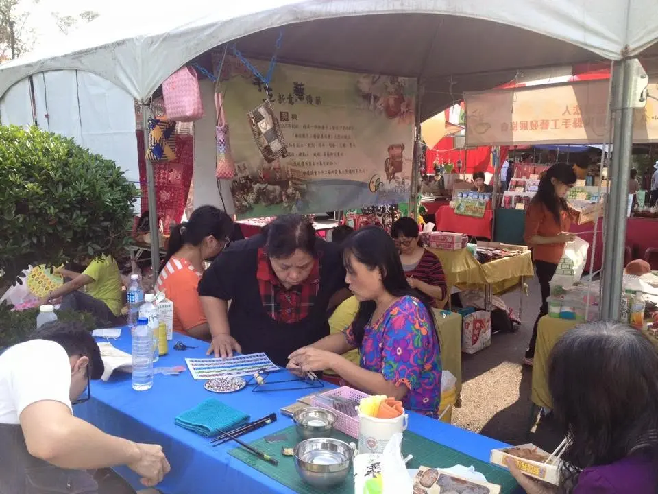
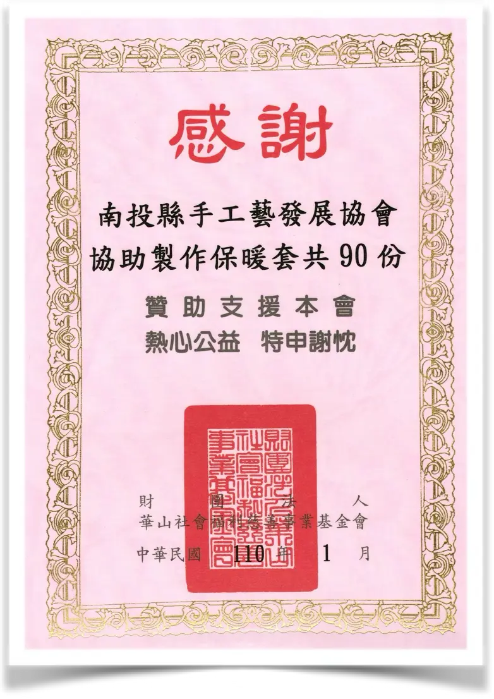
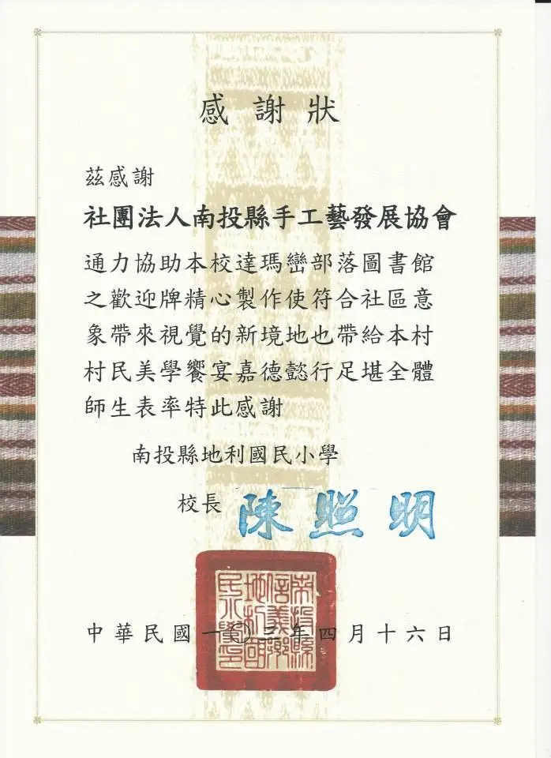
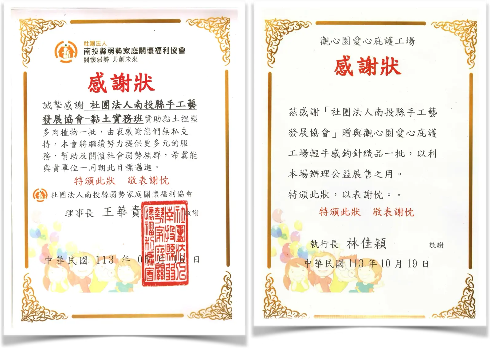
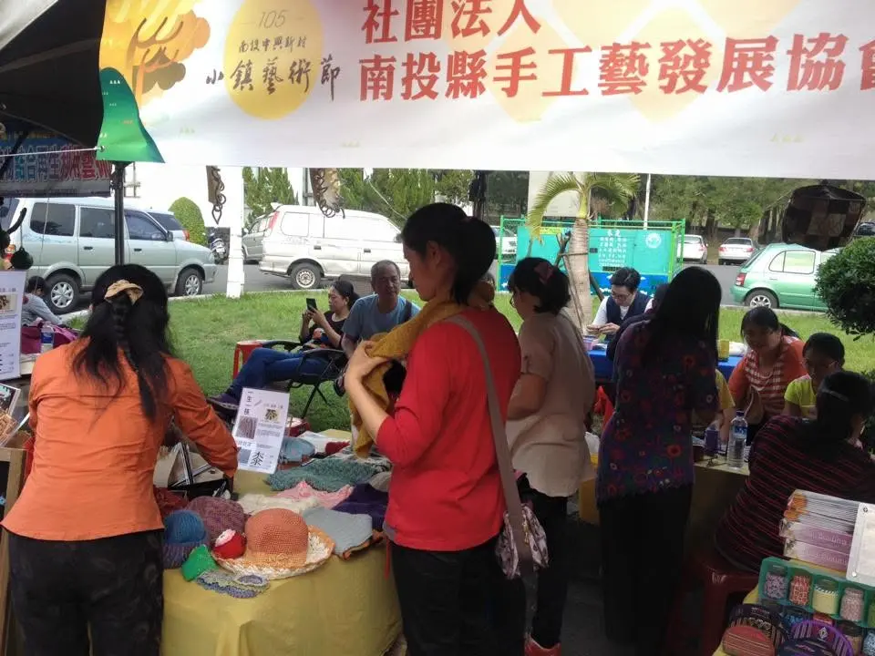
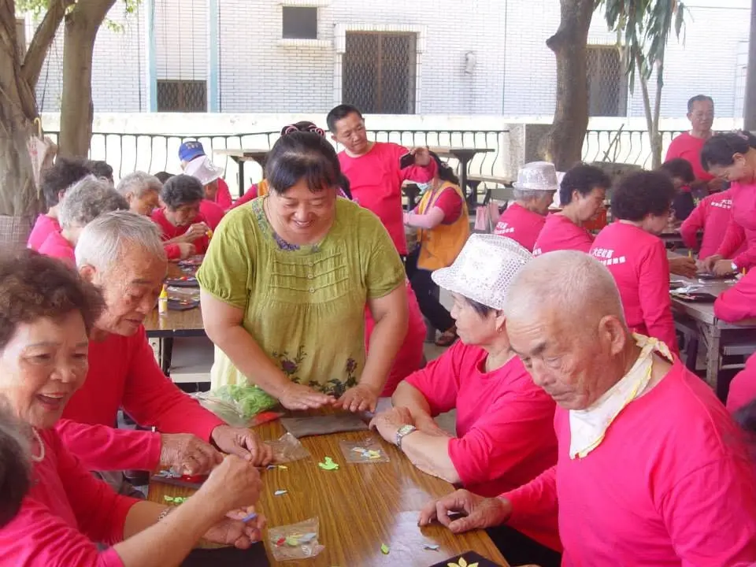
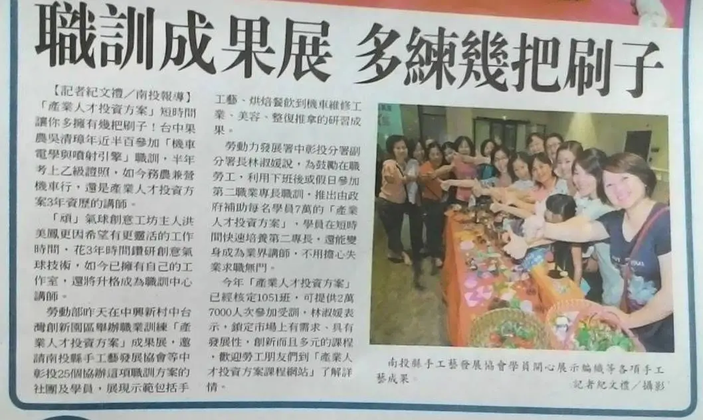
協會辦理多項手工藝職能訓練，陪伴學員累積專業技能與作品成果；相關成果展及培訓成效曾獲報紙刊登報導，呈現協會長期投入人才培育的成果。